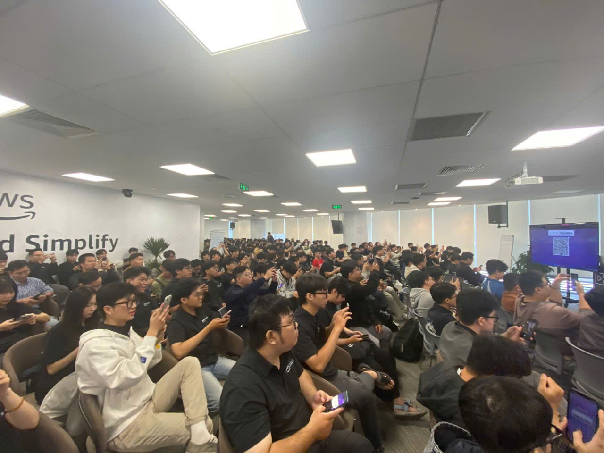

Event 1
Bài thu hoạch “AWS Cloud Mastery Series #1”
Mục Đích Của Sự Kiện
- Giới thiệu các kiến thức nền tảng về AI/ML và GenAI trên AWS
- Trình bày tổng quan Amazon SageMaker cho toàn bộ quy trình Machine Learning
- Khám phá các khả năng Generative AI thông qua Amazon Bedrock
- Minh hoạ thực tiễn về huấn luyện, tinh chỉnh và triển khai mô hình
- Giới thiệu kiến trúc RAG, kỹ thuật prompt engineering và Bedrock Agents
- Thực hành demo trực tiếp cho cả quy trình ML và GenAI
Danh Sách Diễn Giả
Các diễn giả đã làm việc tại aws hoặc các đối tác của aws
Nội Dung Nổi Bật
Chào mừng & Giới thiệu
- Check-in người tham gia và networking
- Giới thiệu mục tiêu workshop và kỳ vọng đầu ra
- Hoạt động ice-breaker
- Tổng quan bối cảnh AI/ML tại Việt Nam
Tổng quan dịch vụ AWS AI/ML
Nền tảng Amazon SageMaker
- Môi trường end-to-end cho toàn bộ vòng đời ML
- Chuẩn bị và gán nhãn dữ liệu
- Huấn luyện mô hình, tinh chỉnh siêu tham số và triển khai
- Khả năng MLOps tích hợp sẵn để tự động hóa và quản trị
Demo trực tiếp
- Trải nghiệm SageMaker Studio: notebook, pipeline, công cụ triển khai
Generative AI với Amazon Bedrock
Các mô hình nền tảng (Foundation Models)
- So sánh Claude, Llama, Titan
- Cách chọn mô hình phù hợp theo từng nhu cầu
Prompt Engineering
- Các kỹ thuật prompting hiệu quả
- Chain-of-Thought reasoning
- Chiến lược few-shot và zero-shot
RAG – Retrieval-Augmented Generation
- Tổng quan kiến trúc
- Cách Knowledge Base giúp mô hình trả lời chính xác hơn
Bedrock Agents
- Tự động hóa quy trình nhiều bước
- Tích hợp các công cụ và dịch vụ bên ngoài
Guardrails
- Lọc nội dung, cấu hình an toàn và đảm bảo AI có trách nhiệm
Demo trực tiếp
- Xây dựng chatbot Generative AI bằng Amazon Bedrock
Những Gì Học Được
Tư duy AI/ML
- Phát triển ML cần xác định đúng bài toán và cải tiến lặp lại
- Chất lượng dữ liệu ảnh hưởng trực tiếp đến hiệu quả mô hình
- Kết hợp MLOps với SageMaker giúp tăng độ tin cậy và tính nhất quán
Kiến Trúc Kỹ Thuật
- Dùng SageMaker để huấn luyện, tinh chỉnh và triển khai mô hình ở quy mô lớn
- Áp dụng prompt engineering để cải thiện chất lượng GenAI
- Implement RAG để tăng độ chính xác dựa trên dữ liệu của tổ chức
- Sử dụng Bedrock Agents để tự động hóa các quy trình phức tạp
Chiến Lược GenAI
- Chọn mô hình nền tảng dựa trên khả năng, chi phí và nhu cầu
- Áp dụng guardrails để đảm bảo an toàn và tuân thủ
- Chuẩn hoá quy trình bằng MLOps và IaC để tái tạo dễ dàng
- Tích hợp GenAI vào ứng dụng hiện tại thông qua API Bedrock
Ứng Dụng Vào Công Việc
- Xây dựng các pipeline ML bằng SageMaker
- Dùng Bedrock để tạo chatbot, trợ lý tài liệu hoặc công cụ tự động hóa
- Áp dụng kỹ thuật prompt engineering trong công việc hằng ngày
- Đánh giá khả năng áp dụng RAG vào các sản phẩm hiện có
- Đưa MLOps vào quy trình để tối ưu triển khai và giám sát
- Kết hợp ML truyền thống và GenAI để xây dựng giải pháp lai (hybrid)
Trải nghiệm trong event
Tham dự “AI/ML/GenAI on AWS” mang lại giá trị lớn, giúp tôi hiểu rõ và thực tiễn hơn về cách xây dựng, triển khai và ứng dụng ML cũng như GenAI trên AWS.
Học hỏi từ chuyên gia
- Nắm được cách xây dựng workflow AI/ML hiện đại trên AWS
- Hiểu sự khác biệt thực tế giữa các mô hình nền tảng phổ biến
- Biết được best practices cho triển khai ML và ứng dụng GenAI
Trải nghiệm kỹ thuật trực tiếp
- Trải nghiệm SageMaker Studio và xây dựng pipeline
- Xây chatbot sử dụng Amazon Bedrock
- Áp dụng các kỹ thuật như prompt engineering và thiết kế RAG
Công cụ hiện đại
- Trải nghiệm Bedrock Agents cho tự động hóa workflow
- Hiểu cách áp dụng guardrails cho AI an toàn
- Học cách dùng MLOps để đảm bảo hiệu suất ở quy mô lớn
Networking và trao đổi
- Kết nối với các chuyên gia và lập trình viên có chung mối quan tâm
- Thảo luận về các case study thực tế và hướng triển khai
Một số hình ảnh khi tham gia sự kiện

Tổng thể, sự kiện đã giúp tôi củng cố kiến thức về AI/ML và GenAI trên AWS, đồng thời định hình lại cách tôi tiếp cận việc phát triển mô hình, quy trình triển khai và tích hợp các tính năng thông minh vào ứng dụng thực tế.